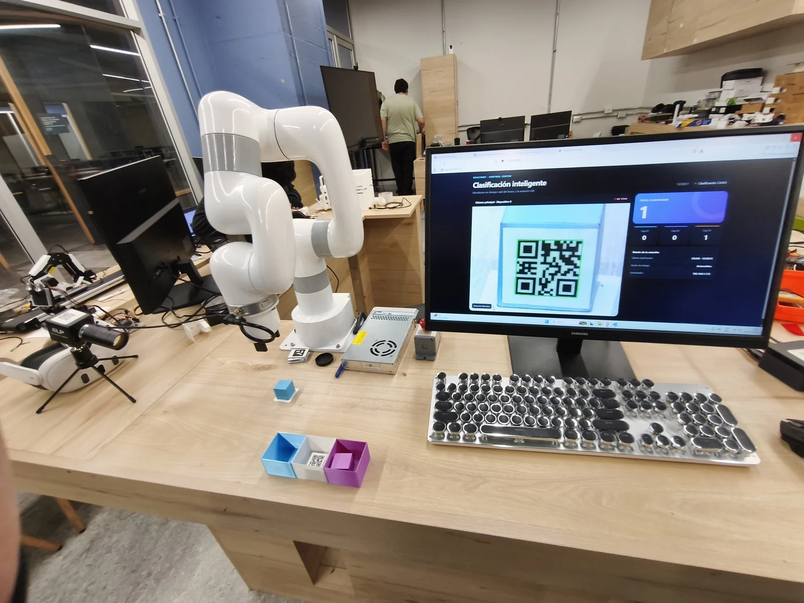
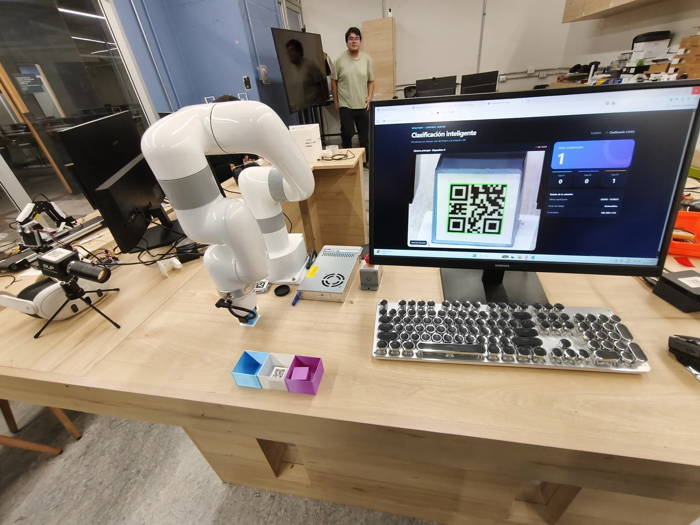
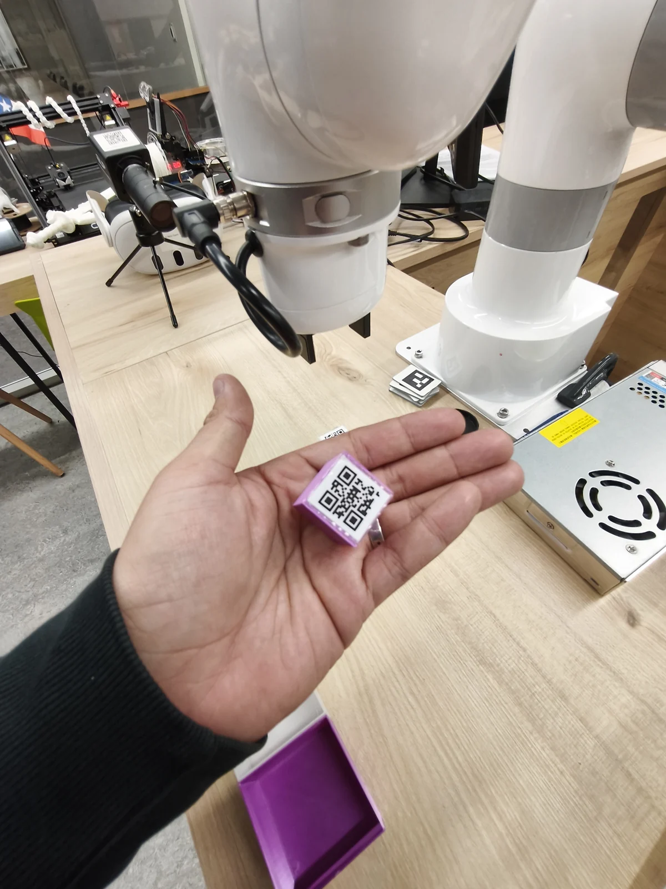

- Robótica
- Visión artificial
- Python
- OpenCV
Brazo robótico UFACTORY LITE 6
Demostración educativa de clasificación por códigos QR con un brazo UFACTORY LITE 6, cámara USB y OpenCV. Un panel web muestra el video, el estado del proceso y los contadores por categoría.

Tecnologías
- Robótica
- Visión artificial
- Python
- OpenCV
Objetivo del proyecto
Mostrar a estudiantes cómo funciona un brazo robótico y cómo la visión artificial permite automatizar tareas de clasificación sin que una persona deba identificar visualmente cada objeto durante la operación.
Arquitectura o funcionamiento
Una cámara USB entrega imágenes a una aplicación Python. OpenCV detecta y decodifica las etiquetas QR; la lógica de clasificación asigna cada etiqueta a un destino y envía los movimientos al brazo mediante el SDK xArm y una conexión de red. Flask sirve un panel local con video y el estado compartido del proceso.
Flujo de funcionamiento
El programa reconoce las etiquetas caja1, caja2 y caja3 y selecciona una posición de destino predefinida. El brazo abre la pinza, recoge el objeto desde una posición fija, lo eleva, lo transporta al destino y lo libera antes de regresar a la posición inicial. Mientras ejecuta una rutina, ignora nuevas solicitudes de movimiento. El panel muestra la imagen de la cámara, el estado del proceso, la última categoría y los contadores de rutinas iniciadas.
Desarrollo e implementación
Preparé esta demostración para acercar a los estudiantes al funcionamiento de un brazo robótico y a su integración con visión artificial, utilizando la clasificación de objetos como ejemplo de una tarea automatizada. La aplicación integra captura y lectura de QR con OpenCV, control del brazo mediante el SDK xArm y supervisión desde una interfaz web Flask.
Desafíos técnicos
La implementación valida los puntos detectados del QR y contempla errores de decodificación. Coordina la cámara, el movimiento y el panel mediante hilos y un estado compartido protegido para evitar rutinas simultáneas. La clasificación requiere etiquetas QR reconocidas y posiciones de recogida y depósito configuradas previamente; los contadores se incrementan al iniciar una rutina y no verifican que el objeto haya sido depositado correctamente.
Resultados
La versión revisada reúne lectura de QR, tres destinos de clasificación, secuencias de recogida y depósito y un panel web de supervisión. La demostración ofrece a los estudiantes un ejemplo concreto de cómo conectar la identificación visual de una categoría con una acción física automatizada.
Aplicaciones posibles
Demostraciones y actividades educativas sobre robótica, visión artificial y automatización, utilizando la clasificación de objetos etiquetados para explicar la relación entre percepción, decisión y movimiento.
Hardware utilizado
- Brazo robótico UFACTORY LITE 6
- Pinza del Lite 6
- Cámara USB
- Computador con Python y conexión de red al brazo
- Objetos con etiquetas QR caja1, caja2 y caja3
Software y tecnologías
- Python
- OpenCV para captura de video y lectura de códigos QR
- NumPy para validación de los puntos del QR
- SDK local xArm para control del brazo
- Flask para el panel web y la consulta del estado
- HTML, CSS y JavaScript para la interfaz de supervisión
Imágenes del proyecto

